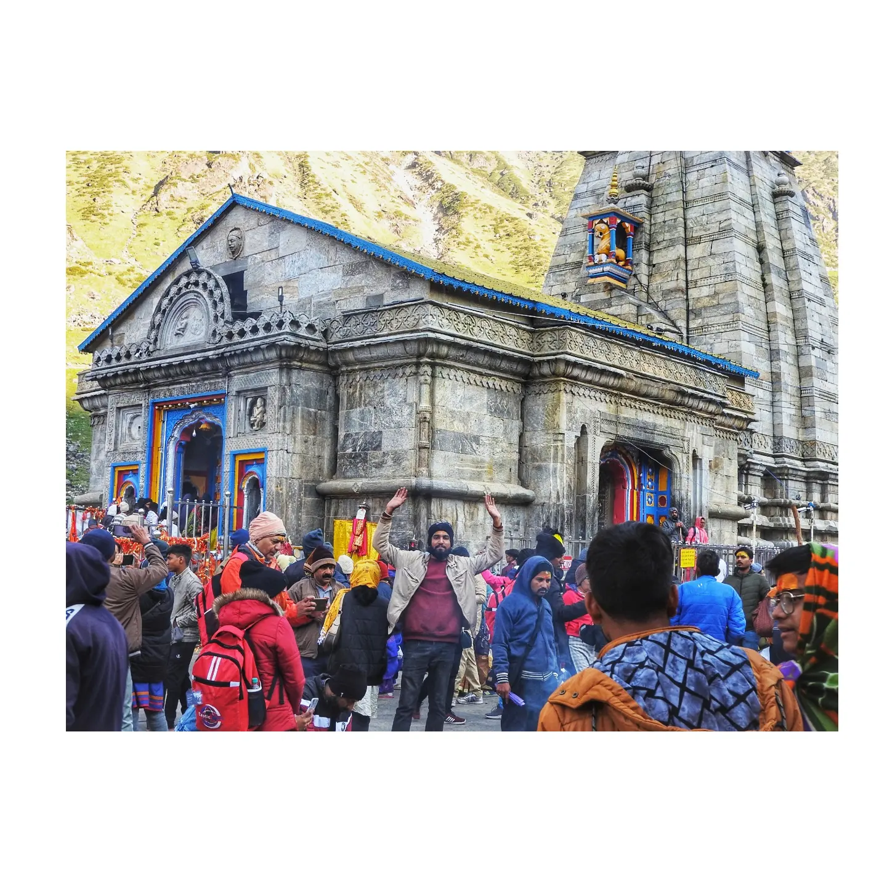
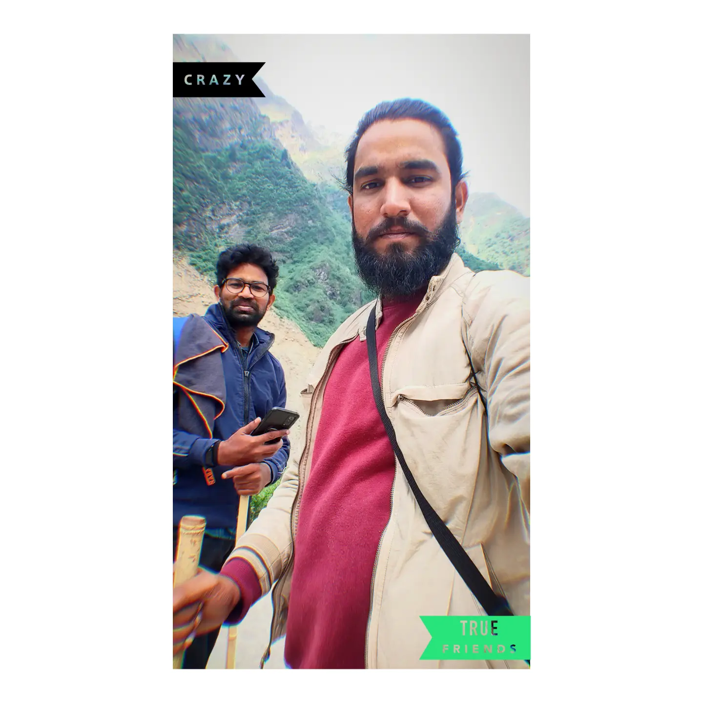

Preparation
[Describe your physical and mental preparation for this trek — training, gear research, and what you knew about the route beforehand.]
What I Carried
- Layered clothing for variable mountain weather
- Trekking poles and a good pair of broken-in shoes
- [Add your specific gear list]
The Full Yatra Route
Haridwar → Rishikesh → Devprayag → Srinagar → Rudraprayag → Guptkashi → Sonprayag → Gaurikund → (trek) → Kedarnath, and back the same way — a 5-day loop starting and ending at Haridwar.
Day 1 — Haridwar → Devprayag → Rudraprayag / Guptkashi
Started early morning from Haridwar and drove via Rishikesh to Devprayag, where the Bhagirathi and Alaknanda rivers meet and the combined river is known as the Ganga from that point on. Continued through Srinagar and Rudraprayag into the Mandakini Valley, with the Himalayan peaks coming into view along the way.
- Har Ki Pauri / Ganga Darshan
- Rishikesh
- Devprayag Sangam
- Rudraprayag and the Mandakini Valley
Night stay: Guptkashi / Sitapur (approx. altitude 1,300 m).
Day 2 — Guptkashi → Gaurikund → Kedarnath
Drove from Guptkashi via Sonprayag to Gaurikund, where the road ends and the Kedarnath trek begins. From there, the trail runs through Jungle Chatti, Bheembali and Linchauli before reaching Kedarnath — roughly 16 km, climbing from about 2,000 m at Gaurikund to 3,584 m (11,762 ft) at Kedarnath.
[Describe how the climb actually felt — the forests, streams, snow-covered peaks, and your first sight of the temple.]
Night stay: Kedarnath.
Toughest Day of the Trip
Day 2 — the Gaurikund to Kedarnath climb — was the hardest stretch of the whole itinerary: an early start, a slow steady pace, staying hydrated and taking regular breaks made the difference.
Day 3 — Kedarnath Darshan → Gaurikund
An early morning darshan at the Kedarnath Temple, followed by morning prayers and time to take in the Shankaracharya Samadhi, Bhairavnath Temple (conditions/time permitting) and the surrounding Himalayan landscape — allowing time to adjust to the altitude before heading back down.
Retraced the trail back down to Gaurikund (roughly 14–16 km downhill), then drove via Sonprayag back to Guptkashi/Sitapur for the night.
Highlights
The Kedarnath Temple itself, the Mandakini Valley, snow-covered peaks along the trail, and the Himalayan forest and stream crossings on the way up.
Day 4 — Guptkashi → Rudraprayag → Devprayag → Rishikesh
Began the return journey after breakfast, retracing the route through Rudraprayag, Srinagar and Devprayag — stopping again at the Alaknanda-Bhagirathi confluence — before reaching Rishikesh in the evening for the Ganga Aarti at the ghat.
Day 5 — Rishikesh → Haridwar
A relaxed morning in Rishikesh — Triveni Ghat, Ganga Darshan, the Ram Jhula area and the local markets — before heading back to Haridwar. The yatra ended at Har Ki Pauri, spending some time beside the Ganga at the point where it enters the Indo-Gangetic plains.
Most Memorable Moment
The most memorable moment of my Kedarnath journey was finally standing in front of Kedarnath Temple, surrounded by the massive Himalayas.
After walking for hours from Gaurikund, every step had brought exhaustion, but reaching the temple created a completely different feeling. The cold mountain air, the sound of the Mandakini, the surrounding peaks and the peaceful atmosphere made me forget the tiredness for a moment.
I remember looking at the temple and thinking about the journey it took to get there.
It wasn't just about reaching Kedarnath. It was about every step that brought me there.
Lessons From the Trek
My Kedarnath trek in June 2022 taught me that some journeys require patience more than speed.
The climb was physically demanding, and there were moments when I felt tired and wanted to stop. But moving forward slowly, taking breaks and trusting the journey made the difficult sections manageable.
The mountains taught me patience.
The trek taught me perseverance.
And Kedarnath taught me faith and humility.
Looking back, I realized that the biggest achievement wasn't simply reaching the temple — it was experiencing the journey along the way.
Trek Tips — What I Learned
- 🥾 Start the Gaurikund–Kedarnath trek early and maintain a comfortable pace.
- 💧 Keep yourself hydrated and take regular breaks.
- 🎒 Keep your backpack light and carry only essentials.
- 👟 Good trekking shoes make a huge difference.
- 🧥 Carry warm clothes and rain protection — mountain weather can change quickly.
- 🐴 Pony/palki can be considered if the trek becomes physically difficult.
- 🏔️ Don't underestimate the altitude — Kedarnath is around 3,584 m (11,762 ft).
- 🙏 Take time to experience the surroundings instead of focusing only on reaching the destination.
- 📸 Keep your camera ready, but don't forget to put it away sometimes and simply enjoy the mountains.
Photo Gallery


Route / Map
Final Thoughts
✨ My Kedarnath, June 2022
"Some journeys end when you reach the destination.
Kedarnath was a journey that stayed with me long after I came back home."